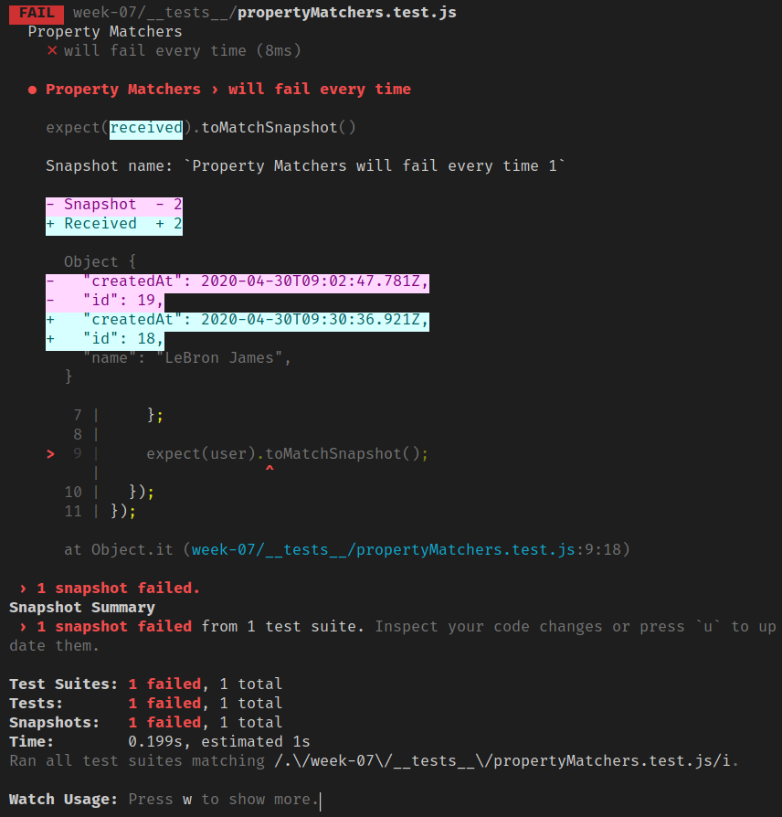

<!DOCTYPE html><html><head><meta charset="utf-8"><title>Jest：Snapshot 測試 | Titangene Blog</title><meta http-equiv="X-UA-Compatible" content="IE=edge"><meta name="viewport" content="width=device-width,initial-scale=1,maximum-scale=1"><meta name="HandheldFriendly" content="True"><meta name="apple-mobile-web-app-capable" content="yes"><meta name="author" content="Titangene"><link rel="shortcut icon" href="/favicon.ico"><link rel="alternate" href="/atom.xml" title="Titangene Blog"><meta name="description" content="若想確保 UI 不會因意外修改而產生 bug，snapshot 測試就是一個很好用的工具。"><meta property="og:type" content="article"><meta property="og:title" content="Jest：Snapshot 測試"><meta property="og:url" content="https://titangene.github.io/article/jest-snapshot-testing.html"><meta property="og:site_name" content="Titangene Blog"><meta property="og:description" content="若想確保 UI 不會因意外修改而產生 bug，snapshot 測試就是一個很好用的工具。"><meta property="og:locale" content="zh_TW"><meta property="og:image" content="https://titangene.github.io/images/cover/jest.jpg"><meta property="article:published_time" content="2020-07-12T15:58:31.000Z"><meta property="article:modified_time" content="2020-07-12T16:14:01.980Z"><meta property="article:author" content="Titangene"><meta property="article:tag" content="w3HexSchool"><meta property="article:tag" content="Jest"><meta property="article:tag" content="JavaScript"><meta property="article:tag" content="Unit Testing"><meta property="article:tag" content="snapshot"><meta name="twitter:card" content="summary_large_image"><meta name="twitter:image" content="https://titangene.github.io/images/cover/jest.jpg"><meta name="twitter:creator" content="@titangeneTW"><meta name="twitter:site" content="@titangene_blog"><meta property="fb:admins" content="100001106016019"><meta property="fb:app_id" content="2470546159839111"><meta property="og:image:width" content="1200"><meta property="og:image:height" content="630"><meta name="google-site-verification" content="AaJ39L7h-nWwJjXJMhAMtXSF6H6BUgGWXC80kYvLic8"><link href="https://fonts.googleapis.com/css2?family=Roboto&display=swap" rel="stylesheet"><link href="https://fonts.googleapis.com/css?family=Source+Code+Pro&display=swap" rel="stylesheet"><link rel="stylesheet" href="https://cdnjs.cloudflare.com/ajax/libs/font-awesome/5.13.0/css/all.min.css"><link rel="stylesheet" href="https://unpkg.com/gitalk/dist/gitalk.css"><link rel="stylesheet" href="/style.css"><script async src="https://www.googletagmanager.com/gtag/js?id=UA-129758206-1"></script><script>!function(a){function n(){dataLayer.push(arguments)}a.dataLayer=a.dataLayer||[],n("js",new Date),n("config","UA-129758206-1")}(window)</script><script>function setLoadingBarProgress(e){document.getElementById("loading-bar").style.width=e+"%"}</script><meta name="generator" content="Hexo 4.2.0"><link rel="alternate" href="/atom.xml" title="Titangene Blog" type="application/atom+xml"></head></html><body><div id="loading-bar-wrapper"><div id="loading-bar"></div></div><script>setLoadingBarProgress(20)</script><header class="l_header"><div class="wrapper"><div class="nav-main container container--flex"><a class="logo flat-box" href="/">Titangene Blog</a><div class="menu"><ul class="h-list"><li><a class="flat-box nav-home" href="/">Home</a></li><li><a class="flat-box nav-archives" href="/archives">Archives</a></li></ul><div class="underline"></div></div><div class="m_search"><form name="searchform" class="form u-search-form"><input type="text" class="input u-search-input" placeholder="Search"> <i class="fas fa-search"></i></form></div><ul class="switcher h-list"><li class="s-search"><a class="fas fa-search" href="javascript:void(0)"></a></li><li class="s-menu"><a class="fas fa-bars" href="javascript:void(0)"></a></li></ul></div><div class="nav-sub container container--flex"><a class="logo flat-box" href="/">Titangene Blog</a><ul class="switcher h-list"><li class="s-comment"><a class="far fa-comment-alt" href="javascript:void(0)"></a></li><li class="s-top"><a class="fas fa-arrow-up" href="javascript:void(0)"></a></li><li class="s-toc"><a class="fas fa-list-ol" href="javascript:void(0)"></a></li></ul></div></div></header><aside class="menu-phone"><nav><a href="/" class="nav-home nav">Home </a><a href="/archives" class="nav-archives nav">Archives</a></nav></aside><script>setLoadingBarProgress(40)</script><div class="l_body"><div class="container clearfix"><div class="l_main"><article id="post-jest-snapshot-testing" class="post white-box article-type-post" itemscope itemprop="blogPost"><section class="meta"><h2 class="title"><a href="/article/jest-snapshot-testing.html">Jest：Snapshot 測試</a></h2><span class="post-time"><span class="post-meta-item-icon"><i class="fa fa-calendar"></i> </span><span class="post-meta-item-text">發表於</span> <time title="建立時間：2020-07-12 23:58:31" itemprop="dateCreated datePublished" datetime="2020-07-12T23:58:31+08:00">2020-07-12 </time><span class="post-meta-divider">|</span> <span class="post-meta-item-icon"><i class="fa fa-calendar-check"></i> </span><span class="post-meta-item-text">更新於</span> <time title="修改時間：2020-07-13 00:14:01" itemprop="dateModified" datetime="2020-07-13T00:14:01+08:00">2020-07-13</time></span> <span class="comments-count"><span class="post-meta-divider">|</span> <span class="post-meta-item-icon"><i class="fas fa-comment"></i> </span><a href="https://titangene.github.io/article/jest-snapshot-testing.html#comments" class="article-comment-count">留言</a></span><div class="post-category"><span class="post-meta-item-icon"><i class="fa fa-folder"></i> </span><span class="post-meta-item-text">分類於</span> <span itemprop="about" itemscope itemtype="http://schema.org/Thing"><a href="/categories/testing/" itemprop="url" rel="index"><span itemprop="name">Testing</span></a></span></div></section><section class="toc-wrapper"><h3>目錄</h3><ol class="toc"><li class="toc-item toc-level-1"><a class="toc-link" href="#使用-Jest-進行-snapshot-測試"><span class="toc-text">使用 Jest 進行 snapshot 測試</span></a></li><li class="toc-item toc-level-1"><a class="toc-link" href="#更新-snapshot"><span class="toc-text">更新 snapshot</span></a></li><li class="toc-item toc-level-1"><a class="toc-link" href="#互動式-snapshot-模式"><span class="toc-text">互動式 snapshot 模式</span></a></li><li class="toc-item toc-level-1"><a class="toc-link" href="#Inline-Snapshots"><span class="toc-text">Inline Snapshots</span></a></li><li class="toc-item toc-level-1"><a class="toc-link" href="#Property-Matchers"><span class="toc-text">Property Matchers</span></a></li></ol></section><section class="article typo"><div class="article-entry" itemprop="articleBody"><p></p><p>若想確保 UI 不會因意外修改而產生 bug，snapshot 測試就是一個很好用的工具。</p><a id="more"></a><blockquote><p>其他 Jest 相關文章可參閱 <a href="https://titangene.github.io/tags/jest/">Jest 系列文章</a>。</p></blockquote><h1 id="使用-Jest-進行-snapshot-測試"><a class="header-anchor" href="#使用-Jest-進行-snapshot-測試"></a>使用 Jest 進行 snapshot 測試</h1><p>如果想測試一個 UI 元件，要測的是產生的元素 (可序列化的值，即 HTML 原始碼)，而不是需要花時間渲染出來的畫面 (圖形 UI)。</p><p>下面以連結元件為例，呼叫 <code>rendererLinkElement()</code>，並傳入 URL 和連結名稱就可以取得 renderer 回傳的 HTML：</p><figure class="highlight javascript"><table><tr><td class="gutter"><pre><span class="line">1</span><br><span class="line">2</span><br><span class="line">3</span><br><span class="line">4</span><br><span class="line">5</span><br><span class="line">6</span><br></pre></td><td class="code"><pre><code class="hljs javascript"><span class="hljs-comment">// src/linkElement.js</span><br><span class="hljs-function"><span class="hljs-keyword">function</span> <span class="hljs-title">rendererLinkElement</span>(<span class="hljs-params">url, linkName</span>) </span>&#123;<br>  <span class="hljs-keyword">return</span> <span class="hljs-string">`&lt;a href="<span class="hljs-subst">$&#123;url&#125;</span>"&gt;<span class="hljs-subst">$&#123;linkName&#125;</span>&lt;/a&gt;`</span>;<br>&#125;<br><br><span class="hljs-keyword">export</span> <span class="hljs-keyword">default</span> rendererLinkElement;<br></code></pre></td></tr></table></figure><p>這邊使用 Jest 提供的 <code>toMatchSnapshot()</code> 進行測試：</p><figure class="highlight javascript"><table><tr><td class="gutter"><pre><span class="line">1</span><br><span class="line">2</span><br><span class="line">3</span><br><span class="line">4</span><br><span class="line">5</span><br><span class="line">6</span><br><span class="line">7</span><br><span class="line">8</span><br><span class="line">9</span><br><span class="line">10</span><br><span class="line">11</span><br></pre></td><td class="code"><pre><code class="hljs javascript"><span class="hljs-comment">// __tests__/externalSnapshots.test.js</span><br>describe(<span class="hljs-string">'external snapshots'</span>, () =&gt; &#123;<br>  it(<span class="hljs-string">'render the link element of the Titangene Blog home page'</span>, () =&gt; &#123;<br>    <span class="hljs-keyword">const</span> url = <span class="hljs-string">'https://titangene.github.io/'</span>;<br>    <span class="hljs-keyword">const</span> linkName = <span class="hljs-string">'Titangene Blog'</span>;<br><br>    <span class="hljs-keyword">const</span> actual = rendererLinkElement(url, linkName);<br><br>    expect(actual).toMatchSnapshot();<br>  &#125;);<br>&#125;);<br></code></pre></td></tr></table></figure><p>執行測試：</p><figure class="highlight shell"><table><tr><td class="gutter"><pre><span class="line">1</span><br><span class="line">2</span><br><span class="line">3</span><br><span class="line">4</span><br><span class="line">5</span><br><span class="line">6</span><br><span class="line">7</span><br><span class="line">8</span><br><span class="line">9</span><br><span class="line">10</span><br><span class="line">11</span><br><span class="line">12</span><br><span class="line">13</span><br><span class="line">14</span><br></pre></td><td class="code"><pre><code class="hljs shell"><span class="hljs-meta">$</span><span class="bash"> npx jest ./__tests__/externalSnapshots.test.js</span><br> PASS  __tests__/externalSnapshots.test.js<br>  external snapshots<br>    ✓ render the link element of the Titangene Blog home page (3ms)<br><br> › 1 snapshot written.<br>Snapshot Summary<br> › 1 snapshot written from 1 test suite.<br><br>Test Suites: 1 passed, 1 total<br>Tests:       1 passed, 1 total<br>Snapshots:   1 written, 1 total<br>Time:        0.657s, estimated 1s<br>Ran all test suites matching /.\/__tests__\/externalSnapshots.test.js/i.<br></code></pre></td></tr></table></figure><p>第一次執行此測試時，Jest 會在 <code>__tests__</code> 目錄內建立 <code>__snapshots__</code> 目錄，裡面建立一個 snapshot 檔案，檔名會是測試檔的名稱再加上 <code>.snap</code> (例如：<code>externalSnapshots.test.js.snap</code> )，內容如下：</p><figure class="highlight javascript"><table><tr><td class="gutter"><pre><span class="line">1</span><br><span class="line">2</span><br><span class="line">3</span><br></pre></td><td class="code"><pre><code class="hljs javascript"><span class="hljs-comment">// Jest Snapshot v1, https://goo.gl/fbAQLP</span><br><br>exports[<span class="hljs-string">`renders correctly 1`</span>] = <span class="hljs-string">`"&lt;a href=\\"https://titangene.github.io/\\"&gt;Titangene Blog&lt;/a&gt;"`</span>;<br></code></pre></td></tr></table></figure><p>之後再次執行測試就會將 render 的輸出與之前的 snapshot 進行比較：</p><ul><li>若 match，測試就會通過</li><li>若不 match，測試就會失敗<ul><li>可能是程式有 bug，或是實作發生變化，需要更新 snapshot</li></ul></li></ul><figure class="highlight shell"><table><tr><td class="gutter"><pre><span class="line">1</span><br><span class="line">2</span><br><span class="line">3</span><br><span class="line">4</span><br><span class="line">5</span><br><span class="line">6</span><br><span class="line">7</span><br><span class="line">8</span><br><span class="line">9</span><br></pre></td><td class="code"><pre><code class="hljs shell"><span class="hljs-meta">$</span><span class="bash"> npx jest ./__tests__/linkElement.test.js</span><br> PASS  __tests__/linkElement.test.js<br>  ✓ renders correctly (4ms)<br><br>Test Suites: 1 passed, 1 total<br>Tests:       1 passed, 1 total<br>Snapshots:   1 passed, 1 total<br>Time:        0.777s, estimated 2s<br>Ran all test suites matching /.\/__tests__\/linkElement.test.js/i.<br></code></pre></td></tr></table></figure><div class="info"><p>snapshot 應與修改的程式碼一起 commit，並在 code review 中進行 review。</p><p>註：Jest 內建提供 <a href="https://github.com/facebook/jest/tree/master/packages/pretty-format" target="_blank" rel="noopener"><code>pretty-format</code></a> 套件，可讓任何 JavaScript 值變成 human-readable 的字串 (序列化 JavaScript 內建型別值)，而 snapshot 就使用了此套件，所以 snapshot 才能在 code review 過程具有可讀性。</p></div><h1 id="更新-snapshot"><a class="header-anchor" href="#更新-snapshot"></a>更新 snapshot</h1><p>剛剛提到，若程式的實作發生變化，snapshot 與程式執行結果可能會不 match，測試就會失敗。</p><p>假設不是因為 bug，是你現在修改的執行結果的確是你要的，但 snapshot 還是之前的預期結果，而你想將 snapshot 換成新的預期結果，這就需要更新 snapshot。</p><p>下面就舉個情境，假設我想將測試修改成這樣：</p><figure class="highlight diff"><table><tr><td class="gutter"><pre><span class="line">1</span><br><span class="line">2</span><br><span class="line">3</span><br><span class="line">4</span><br><span class="line">5</span><br><span class="line">6</span><br><span class="line">7</span><br><span class="line">8</span><br><span class="line">9</span><br><span class="line">10</span><br></pre></td><td class="code"><pre><code class="hljs diff">it('renders correctly', () =&gt; &#123;<br><span class="hljs-deletion">-  const url = 'https://titangene.github.io/';</span><br><span class="hljs-deletion">-  const linkName = 'Titangene Blog';</span><br><span class="hljs-addition">+  const url = 'https://www.google.com/';</span><br><span class="hljs-addition">+  const linkName = 'Google';</span><br><br>  const actual = rendererLinkElement(url, linkName);<br><br>  expect(actual).toMatchSnapshot();<br>&#125;);<br></code></pre></td></tr></table></figure><p>再次執行測試就會失敗，因為之前 snapshot 儲存的跟現在修改的不 match：</p><p></p><p>使用 <code>--updateSnapshot</code> (或 <code>-u</code> ) option 就能為失敗的測試重新建立新的 snapshot (通過的測試不會重新建立)：</p><figure class="highlight shell"><table><tr><td class="gutter"><pre><span class="line">1</span><br></pre></td><td class="code"><pre><code class="hljs shell"><span class="hljs-meta">$</span><span class="bash"> jest --updateSnapshot</span><br></code></pre></td></tr></table></figure><figure class="highlight shell"><table><tr><td class="gutter"><pre><span class="line">1</span><br><span class="line">2</span><br><span class="line">3</span><br><span class="line">4</span><br><span class="line">5</span><br><span class="line">6</span><br><span class="line">7</span><br><span class="line">8</span><br><span class="line">9</span><br><span class="line">10</span><br><span class="line">11</span><br><span class="line">12</span><br><span class="line">13</span><br></pre></td><td class="code"><pre><code class="hljs shell"><span class="hljs-meta">$</span><span class="bash"> npx jest ./__tests__/linkElement.test.js -u</span><br> PASS  __tests__/linkElement.test.js<br>  ✓ renders correctly (4ms)<br><br> › 1 snapshot updated.<br>Snapshot Summary<br> › 1 snapshot updated from 1 test suite.<br><br>Test Suites: 1 passed, 1 total<br>Tests:       1 passed, 1 total<br>Snapshots:   1 updated, 1 total<br>Time:        0.794s, estimated 1s<br>Ran all test suites matching /.\/__tests__\/linkElement.test.js/i.<br></code></pre></td></tr></table></figure><p>若要指定哪個測試需要重新產生 snapshot，可加上 <code>--testNamePattern=&lt;regex&gt;</code> option：</p><figure class="highlight javascript"><table><tr><td class="gutter"><pre><span class="line">1</span><br></pre></td><td class="code"><pre><code class="hljs javascript">$ jest -u --testNamePattern=<span class="xml"><span class="hljs-tag">&lt;<span class="hljs-name">regex</span>&gt;</span></span><br></code></pre></td></tr></table></figure><h1 id="互動式-snapshot-模式"><a class="header-anchor" href="#互動式-snapshot-模式"></a>互動式 snapshot 模式</h1><p>在 watch 模式下，按 <code>i</code> 鍵進入互動式 snapshot 模式 (只有在有 failed snapshot 時，才會看到 <code>i</code> 這個選項)：</p><p></p><p>此互動式 snapshot 模式是用 failed snapshot 和 failed output，此模式會各別看每個 snapshot，有以下功能：</p><ul><li><code>u</code> (update)：更新失敗的 snapshot</li><li><code>s</code> (skip)：跳過當前測試 (跳至下一個測試)</li><li><code>q</code> (quit)：離開互動式 snapshot 模式</li><li><code>Enter</code>：觸發測試執行 (重跑單前測試)</li></ul><p>只要還有一個 failed snapshot 未更新，就能按 <code>r</code> 鍵重新回到互動式 snapshot 模式：</p><p></p><p>更新所有 failed snapshot 後，就可按 <code>Enter</code> 回到 watch 模式：</p><p></p><blockquote><p>可是奇怪的是，原本我執行 Jest 時有指定某個目錄內的測試，當我從互動式 snapshot 模式回到 watch 模式時，竟然之前的指令就失效，所以還會多測其他目錄內的測試 (目前猜測是未被 Git 追蹤的測試檔都會被執行)。</p></blockquote><h1 id="Inline-Snapshots"><a class="header-anchor" href="#Inline-Snapshots"></a>Inline Snapshots</h1><p>inline snapshot 和 external snapshot ( <code>.snap</code> 檔案) 的行為相同，但 inline snapshot 會把 snapshot value 自動寫回原始碼中。不用切換至外部檔案來確保寫入正確的值。</p><div class="warning"><p>inline snapshot 是由 <a href="https://prettier.io/" target="_blank" rel="noopener">Prettier</a> 提供支援，所以必須安裝 Prettier 才能用 inline snapshot。寫測試檔時，請遵守你的 Prettier 配置。</p><p>若你在 Jest 找不到的地方安裝 Prettier，則可用 <a href="https://jestjs.io/docs/en/configuration#prettierpath-string" target="_blank" rel="noopener"><code>prettierPath</code></a> 配置屬性來告訴 Jest。</p><p>如果未安裝 Prettier 就使用 <code>toMatchInlineSnapshot()</code>，會輸出以下錯誤訊息：</p><figure class="highlight shell"><table><tr><td class="gutter"><pre><span class="line">1</span><br><span class="line">2</span><br><span class="line">3</span><br><span class="line">4</span><br><span class="line">5</span><br><span class="line">6</span><br></pre></td><td class="code"><pre><code class="hljs shell">FAIL  __tests__/inlineSnapshots.test.js<br> ● Test suite failed to run<br><br>   Cannot find module 'prettier' from 'setup_jest_globals.js'<br><br>     at Resolver.resolveModule (node_modules/jest-resolve/build/index.js:296:11)<br></code></pre></td></tr></table></figure></div><p>安裝 Prettier：</p><figure class="highlight shell"><table><tr><td class="gutter"><pre><span class="line">1</span><br></pre></td><td class="code"><pre><code class="hljs shell"><span class="hljs-meta">$</span><span class="bash"> yarn add prettier --dev --exact</span><br></code></pre></td></tr></table></figure><p>一開始寫測試時，不帶 argument 呼叫 <code>toMatchInlineSnapshot()</code>：</p><figure class="highlight javascript"><table><tr><td class="gutter"><pre><span class="line">1</span><br><span class="line">2</span><br><span class="line">3</span><br><span class="line">4</span><br><span class="line">5</span><br><span class="line">6</span><br><span class="line">7</span><br><span class="line">8</span><br><span class="line">9</span><br><span class="line">10</span><br><span class="line">11</span><br><span class="line">12</span><br><span class="line">13</span><br></pre></td><td class="code"><pre><code class="hljs javascript"><span class="hljs-comment">// __tests__/inlineSnapshots.test.js</span><br><span class="hljs-keyword">import</span> rendererLinkElement <span class="hljs-keyword">from</span> <span class="hljs-string">"../src/linkElement"</span>;<br><br>describe(<span class="hljs-string">"inline snapshots"</span>, () =&gt; &#123;<br>  it(<span class="hljs-string">"render the link element of the Titangene Blog home page"</span>, () =&gt; &#123;<br>    <span class="hljs-keyword">const</span> url = <span class="hljs-string">"https://titangene.github.io/"</span>;<br>    <span class="hljs-keyword">const</span> linkName = <span class="hljs-string">"Titangene Blog"</span>;<br><br>    <span class="hljs-keyword">const</span> actual = rendererLinkElement(url, linkName);<br><br>    expect(actual).toMatchInlineSnapshot();<br>  &#125;);<br>&#125;);<br></code></pre></td></tr></table></figure><p>執行測試時，Jest 會對 <code>tree</code> 進行評估，且 snapshot 會寫入 <code>toMatchInlineSnapshot()</code> 的 argument：</p><figure class="highlight shell"><table><tr><td class="gutter"><pre><span class="line">1</span><br><span class="line">2</span><br><span class="line">3</span><br><span class="line">4</span><br><span class="line">5</span><br><span class="line">6</span><br><span class="line">7</span><br><span class="line">8</span><br><span class="line">9</span><br><span class="line">10</span><br><span class="line">11</span><br><span class="line">12</span><br><span class="line">13</span><br><span class="line">14</span><br></pre></td><td class="code"><pre><code class="hljs shell"><span class="hljs-meta">$</span><span class="bash"> npx jest .__tests__/inlineSnapshots.test.js</span><br> PASS  __tests__/inlineSnapshots.test.js<br>  inline snapshots<br>    ✓ render the link element of the Titangene Blog home page (12ms)<br><br> › 1 snapshot written.<br>Snapshot Summary<br> › 1 snapshot written from 1 test suite.<br><br>Test Suites: 1 passed, 1 total<br>Tests:       1 passed, 1 total<br>Snapshots:   1 written, 1 total<br>Time:        0.909s, estimated 1s<br>Ran all test suites matching /.\/__tests__\/inlineSnapshots.test.js/i.<br></code></pre></td></tr></table></figure><figure class="highlight javascript"><table><tr><td class="gutter"><pre><span class="line">1</span><br><span class="line">2</span><br><span class="line">3</span><br><span class="line">4</span><br><span class="line">5</span><br><span class="line">6</span><br><span class="line">7</span><br><span class="line">8</span><br><span class="line">9</span><br><span class="line">10</span><br><span class="line">11</span><br><span class="line">12</span><br></pre></td><td class="code"><pre><code class="hljs javascript">describe(<span class="hljs-string">"inline snapshots"</span>, () =&gt; &#123;<br>  it(<span class="hljs-string">"render the link element of the Titangene Blog home page"</span>, () =&gt; &#123;<br>    <span class="hljs-keyword">const</span> url = <span class="hljs-string">"https://titangene.github.io/"</span>;<br>    <span class="hljs-keyword">const</span> linkName = <span class="hljs-string">"Titangene Blog"</span>;<br><br>    <span class="hljs-keyword">const</span> actual = rendererLinkElement(url, linkName);<br><br>    expect(actual).toMatchInlineSnapshot(<br>      <span class="hljs-string">`"&lt;a href=\\"https://titangene.github.io/\\"&gt;Titangene Blog&lt;/a&gt;"`</span><br>    );<br>  &#125;);<br>&#125;);<br></code></pre></td></tr></table></figure><p>也可在指令使用 <code>--updateSnapshot</code> (或 <code>-u</code> ) option 或在 <code>--watch</code> 模式下按 <code>u</code> 鍵來更新 snapshot。</p><h1 id="Property-Matchers"><a class="header-anchor" href="#Property-Matchers"></a>Property Matchers</h1><p>有時 snapshot 的物件中會有生成一些 field (例如：ID 和 Date)，若對這些物件進行 snapshot，就會在執行時常常發生 snapshot 失敗。</p><figure class="highlight javascript"><table><tr><td class="gutter"><pre><span class="line">1</span><br><span class="line">2</span><br><span class="line">3</span><br><span class="line">4</span><br><span class="line">5</span><br><span class="line">6</span><br><span class="line">7</span><br><span class="line">8</span><br><span class="line">9</span><br><span class="line">10</span><br><span class="line">11</span><br><span class="line">12</span><br><span class="line">13</span><br><span class="line">14</span><br></pre></td><td class="code"><pre><code class="hljs javascript"><span class="hljs-comment">// __tests__/propertyMatchers.test.js</span><br>describe(<span class="hljs-string">'Property Matchers'</span>, () =&gt; &#123;<br>  it(<span class="hljs-string">'will fail every time'</span>, () =&gt; &#123;<br>    <span class="hljs-keyword">const</span> user = &#123;<br>      name: <span class="hljs-string">'Titan'</span>,<br>      createdAt: <span class="hljs-keyword">new</span> <span class="hljs-built_in">Date</span>(),<br>      id: <span class="hljs-built_in">Math</span>.floor(<span class="hljs-built_in">Math</span>.random() * <span class="hljs-number">20</span>)<br>    &#125;;<br><br>    <span class="hljs-built_in">console</span>.log(user);<br><br>    expect(user).toMatchSnapshot();<br>  &#125;);<br>&#125;);<br></code></pre></td></tr></table></figure><p>像上面的測試執行第二次時，snapshot 就會失敗：</p><p></p><p>所以 Jest 允許你對任何 property 提供 asymmetric matcher。Jest 會在寫入 snapshot 或測試 snapshot 之前，檢查 matcher，然後將 snapshot 儲存至 snapshot 檔案中，而不是 received value：</p><figure class="highlight javascript"><table><tr><td class="gutter"><pre><span class="line">1</span><br><span class="line">2</span><br><span class="line">3</span><br><span class="line">4</span><br><span class="line">5</span><br><span class="line">6</span><br><span class="line">7</span><br><span class="line">8</span><br><span class="line">9</span><br><span class="line">10</span><br><span class="line">11</span><br><span class="line">12</span><br><span class="line">13</span><br><span class="line">14</span><br><span class="line">15</span><br><span class="line">16</span><br><span class="line">17</span><br></pre></td><td class="code"><pre><code class="hljs javascript"><span class="hljs-comment">// __tests__/propertyMatchers.test.js</span><br>describe(<span class="hljs-string">'Property Matchers'</span>, () =&gt; &#123;<br>  it(<span class="hljs-string">'will check the matchers and pass'</span>, () =&gt; &#123;<br>    <span class="hljs-keyword">const</span> user = &#123;<br>      name: <span class="hljs-string">'Titan'</span>,<br>      createdAt: <span class="hljs-keyword">new</span> <span class="hljs-built_in">Date</span>(),<br>      id: <span class="hljs-built_in">Math</span>.floor(<span class="hljs-built_in">Math</span>.random() * <span class="hljs-number">20</span>)<br>    &#125;;<br><br>    <span class="hljs-built_in">console</span>.log(user);<br><br>    expect(user).toMatchSnapshot(&#123;<br>      createdAt: expect.any(<span class="hljs-built_in">Date</span>),<br>      id: expect.any(<span class="hljs-built_in">Number</span>),<br>    &#125;);<br>  &#125;);<br>&#125;);<br></code></pre></td></tr></table></figure><div class="info"><p>asymmetric matcher：在 <a href="https://jasmine.github.io/tutorials/custom_argument_matchers" target="_blank" rel="noopener">Jasmine</a> 也稱為 argument matcher，可用於建立自己的自訂 matcher 來封裝測試邏輯。</p></div><p>下面是 snapshot 儲存的內容：</p><figure class="highlight javascript"><table><tr><td class="gutter"><pre><span class="line">1</span><br><span class="line">2</span><br><span class="line">3</span><br><span class="line">4</span><br><span class="line">5</span><br><span class="line">6</span><br><span class="line">7</span><br><span class="line">8</span><br></pre></td><td class="code"><pre><code class="hljs javascript"><span class="hljs-comment">// __tests__/__snapshots__/propertyMatchers.test.js.snap</span><br>exports[<span class="hljs-string">`Property Matchers will check the matchers and pass 1`</span>] = <span class="hljs-string">`</span><br><span class="hljs-string">Object &#123;</span><br><span class="hljs-string">  "createdAt": Any&lt;Date&gt;,</span><br><span class="hljs-string">  "id": Any&lt;Number&gt;,</span><br><span class="hljs-string">  "name": "Titan",</span><br><span class="hljs-string">&#125;</span><br><span class="hljs-string">`</span>;<br></code></pre></td></tr></table></figure><p>任何非 matcher 的 givin value，會被被明確地檢查並儲存至 snapshot，例如下面測試中的 <code>name</code> property：</p><figure class="highlight javascript"><table><tr><td class="gutter"><pre><span class="line">1</span><br><span class="line">2</span><br><span class="line">3</span><br><span class="line">4</span><br><span class="line">5</span><br><span class="line">6</span><br><span class="line">7</span><br><span class="line">8</span><br><span class="line">9</span><br><span class="line">10</span><br><span class="line">11</span><br><span class="line">12</span><br><span class="line">13</span><br><span class="line">14</span><br><span class="line">15</span><br><span class="line">16</span><br><span class="line">17</span><br><span class="line">18</span><br></pre></td><td class="code"><pre><code class="hljs javascript"><span class="hljs-comment">// __tests__/propertyMatchers.test.js</span><br>describe(<span class="hljs-string">'Property Matchers'</span>, () =&gt; &#123;<br>  it(<span class="hljs-string">'will check the values and pass'</span>, () =&gt; &#123;<br>    <span class="hljs-keyword">const</span> user = &#123;<br>      name: <span class="hljs-string">'Titan'</span>,<br>      createdAt: <span class="hljs-keyword">new</span> <span class="hljs-built_in">Date</span>(),<br>      id: <span class="hljs-built_in">Math</span>.floor(<span class="hljs-built_in">Math</span>.random() * <span class="hljs-number">20</span>)<br>    &#125;;<br><br>    <span class="hljs-built_in">console</span>.log(user);<br><br>    expect(user).toMatchSnapshot(&#123;<br>      name: <span class="hljs-string">'Titan'</span>,<br>      createdAt: expect.any(<span class="hljs-built_in">Date</span>),<br>      id: expect.any(<span class="hljs-built_in">Number</span>),<br>    &#125;);<br>  &#125;);<br>&#125;);<br></code></pre></td></tr></table></figure><p>下面是 snapshot 儲存的內容：</p><figure class="highlight javascript"><table><tr><td class="gutter"><pre><span class="line">1</span><br><span class="line">2</span><br><span class="line">3</span><br><span class="line">4</span><br><span class="line">5</span><br><span class="line">6</span><br><span class="line">7</span><br><span class="line">8</span><br></pre></td><td class="code"><pre><code class="hljs javascript"><span class="hljs-comment">// __tests__/__snapshots__/propertyMatchers.test.js.snap</span><br>exports[<span class="hljs-string">`Property Matchers will check the values and pass 1`</span>] = <span class="hljs-string">`</span><br><span class="hljs-string">Object &#123;</span><br><span class="hljs-string">  "createdAt": Any&lt;Date&gt;,</span><br><span class="hljs-string">  "id": Any&lt;Number&gt;,</span><br><span class="hljs-string">  "name": "Titan",</span><br><span class="hljs-string">&#125;</span><br><span class="hljs-string">`</span>;<br></code></pre></td></tr></table></figure><p>資料來源：</p><ul><li><a href="https://jestjs.io/docs/en/snapshot-testing" target="_blank" rel="noopener">Snapshot Testing · Jest</a></li><li><a href="https://jestjs.io/blog/2016/07/27/jest-14.html" target="_blank" rel="noopener">Jest 14.0: React Tree Snapshot Testing · Jest</a></li><li><a href="https://benmccormick.org/2016/09/19/testing-with-jest-snapshots-first-impressions/" target="_blank" rel="noopener">Testing with Jest Snapshots: First Impressions | benmccormick.org</a></li><li><a href="https://egghead.io/lessons/javascript-use-jest-s-snapshot-testing-feature?pl=testing-javascript-with-jest-a36c4074" target="_blank" rel="noopener">Use Jest’s Snapshot Testing Feature from @kentcdodds on @eggheadio</a></li></ul></div><div class="article-tags tags"><a href="/tags/w3hexschool/" title="w3HexSchool">w3HexSchool</a> <a href="/tags/jest/" title="Jest">Jest</a> <a href="/tags/javascript/" title="JavaScript">JavaScript</a> <a href="/tags/unit-testing/" title="Unit Testing">Unit Testing</a> <a href="/tags/snapshot/" title="snapshot">snapshot</a></div></section><div class="article-share-links"><span>分享：</span> <a class="fab fa-facebook-f" title="Facebook" target="_blank" href="javascript:window.open('https://www.facebook.com/sharer.php?u=https%3A%2F%2Ftitangene.github.io%2Farticle%2Fjest-snapshot-testing.html', 'Share on Facebook','width=600, height=600')"></a> <a class="fab fa-twitter" title="Twitter" target="_blank" href="javascript:window.open('https://twitter.com/share?url=https%3A%2F%2Ftitangene.github.io%2Farticle%2Fjest-snapshot-testing.html&amp;text=Jest：Snapshot 測試&amp;hashtags=w3HexSchool,Jest,JavaScript,UnitTesting,snapshot&amp;via=titangene_blog', 'Share on Twitter','width=600, height=260')"></a> <a class="fab fa-linkedin-in" title="Linkedin" target="_blank" href="javascript:window.open('https://www.linkedin.com/shareArticle?mini=true&amp;url=https%3A%2F%2Ftitangene.github.io%2Farticle%2Fjest-snapshot-testing.html&amp;title=Jest：Snapshot 測試', 'Share on Linkedin','width=600, height=600')"></a> <a class="fab fa-facebook-messenger" title="Facebook Messenger" target="_blank" href="javascript:window.open('http://www.facebook.com/dialog/send?app_id=2470546159839111&amp;link=https%3A%2F%2Ftitangene.github.io%2Farticle%2Fjest-snapshot-testing.html&amp;display=popup&amp;redirect_uri=https%3A%2F%2Fwww.facebook.com%2Fdialog%2Freturn%2Fclose%23_%3D_', 'Send in Messenger','width=600, height=600')"></a> <a class="fab fa-telegram-plane" href="https://telegram.me/share/url?url=https%3A%2F%2Ftitangene.github.io%2Farticle%2Fjest-snapshot-testing.html&text=Jest：Snapshot 測試" target="_blank"></a></div><nav id="article-nav"><a href="/article/jest-mock-function.html" id="article-nav-prev" class="article-nav-link-wrap" title="Jest：Mock 函數" rel="prev"><strong class="article-nav-caption">Prev</strong><p class="article-nav-title">Jest：Mock 函數</p><i class="fas fa-angle-left"></i> </a><a href="/article/jest-timer-mocks.html" id="article-nav-next" class="article-nav-link-wrap" title="Jest：Timer Mocks" rel="next"><strong class="article-nav-caption">Next</strong><p class="article-nav-title">Jest：Timer Mocks</p><i class="fas fa-angle-right"></i></a></nav><section id="list_related_posts"><h2>相關文章</h2><ul class="related-posts"><li class="related-posts-item"><a class="related-posts-link" href="/article/jest-matcher-assertion.html">Jest：Matcher & Assertion</a><div class="related-posts-item-abstract">Assertion (斷言) 就要測試程式碼的執行結果是否符合預期，如果結果一致，代表測試通過，否則 assertion 就會拋出錯誤，代表測試失敗。而 Jest 提供多種 matcher，能讓你 assert 程式碼執</div></li><li class="related-posts-item"><a class="related-posts-link" href="/article/jest-setup-teardown.html">Jest：Setup & Teardown</a><div class="related-posts-item-abstract">每個測試案例都必須是獨立的，不能互相影響，而解決方法就是讓每個測試在執行前進行重設，或在每個測試結束後清除痕跡。在 Jest，提供 setup 和 teardown 的函數，能讓你自訂在執行 describe 區塊或 t</div></li><li class="related-posts-item"><a class="related-posts-link" href="/article/jest-async-test.html">Jest：非同步測試</a><div class="related-posts-item-abstract">處理 JS 非同步的常見作法包括 callback、ES6 的 Promise 以及 ES7 的 async 和 await，而本篇會分別說明如何在 Jest 使用這些 JS 特性來測試非同步程式碼。其他 Jest 相關</div></li><li class="related-posts-item"><a class="related-posts-link" href="/article/jest-describe-test-case.html">Jest：Describe & Test case</a><div class="related-posts-item-abstract">上次介紹了 Jest 提供的 matcher，可讓你驗證程式碼是否符合預期，而這次來說明如何透過 describe 和 test 區塊來組織測試案例。當需求變多時，可針對需求來分類測試案例，將相關的測試放在同一個群組區塊</div></li><li class="related-posts-item"><a class="related-posts-link" href="/article/jest-mock-function.html">Jest：Mock 函數</a><div class="related-posts-item-abstract">Jest 提供的 mock 函數可讓你自行決定要 mock 到什麼程度，並且可讓你在呼叫該 mock 函數之後，捕捉呼叫的次數、傳入的參數、使用 new 實例化的 instance，以及你指定要回傳的值，我們可透過這些資</div></li><li class="related-posts-item"><a class="related-posts-link" href="/article/jest-build-test-env.html">Jest：建置測試環境 (包含 Babel)</a><div class="related-posts-item-abstract">最近在學習單元測試，而 Jest 是在前端蠻常見的測試框架，可透過建立測試來確保自己寫的程式碼是否符合需求，而且當改動程式碼時，才能確保是否因不小心而產生的 bug，測試能讓我更有信心的去重構程式碼。其他 Jest 相關</div></li></ul></section><section class="comments" id="comments"><h2>討論區</h2><div id="gitalk-container"></div><div id="disqus_thread" style="margin-top:20px"><noscript>Please enable JavaScript to view the <a href="https://disqus.com/?ref_noscript" target="_blank" rel="noopener">comments powered by Disqus.</a></noscript></div></section></article><script>window.subData={title:"Jest：Snapshot 測試",tools:!0}</script></div><aside class="l_side"><section class="m_widget about"><div class="avatar-section"><style>.avatar-cover{background:url(/images/avatar_cover.jpg) 0 10%/cover no-repeat}</style><div class="avatar-cover"></div></div><div class="header">Titangene</div><div class="content"><div class="desc">利用 blog 紀錄學習歷程</div></div><div class="content"><meta itemprop="url" content="https://titangene.github.io"><div class="social-wrapper"><a itemprop="sameAs" href="https://github.com/titangene" class="social github" target="_blank" rel="external"><span class="fab fa-github-alt"></span> </a><a itemprop="sameAs" href="https://www.facebook.com/titangene.tw" class="social facebook" target="_blank" rel="external"><span class="fab fa-facebook-square"></span> </a><a itemprop="sameAs" href="https://www.instagram.com/titangene/" class="social instagram" target="_blank" rel="external"><span class="fab fa-instagram"></span> </a><a itemprop="sameAs" href="https://www.flickr.com/photos/titangene" class="social flickr" target="_blank" rel="external"><span class="fab fa-flickr"></span> </a><a itemprop="sameAs" href="/atom.xml" class="social rss" target="_blank" rel="external"><span class="fas fa-rss"></span></a></div></div></section><section class="m_widget facebook_page"><div class="fb-page" data-href="https://www.facebook.com/titangene.blog/" data-width="250" data-small-header="false" data-adapt-container-width="false" data-hide-cover="false" data-show-facepile="true"><blockquote cite="https://www.facebook.com/titangene.blog/" class="fb-xfbml-parse-ignore"><p><a href="https://www.facebook.com/titangene.blog/" class="social facebook" target="_blank"><span class="fab fa-facebook-square"></span></a></p><p><a href="https://www.facebook.com/titangene.blog/" target="_blank" rel="noopener">Titangene Blog</a></p><p>Loading...</p></blockquote></div></section><section class="m_widget recent"><div class="header">Recents</div><div class="content"><ul class="entry"><li><a itemprop="url" class="flat-box" href="/article/jest-timer-mocks.html"><time>2020-07-19</time><div class="name">Jest：Timer Mocks</div></a></li><li><a itemprop="url" class="flat-box" href="/article/jest-snapshot-testing.html"><time>2020-07-12</time><div class="name">Jest：Snapshot 測試</div></a></li><li><a itemprop="url" class="flat-box" href="/article/jest-mock-function.html"><time>2020-07-05</time><div class="name">Jest：Mock 函數</div></a></li><li><a itemprop="url" class="flat-box" href="/article/jest-async-test.html"><time>2020-06-28</time><div class="name">Jest：非同步測試</div></a></li><li><a itemprop="url" class="flat-box" href="/article/jest-setup-teardown.html"><time>2020-06-21</time><div class="name">Jest：Setup &amp; Teardown</div></a></li><li><a itemprop="url" class="flat-box" href="/article/jest-describe-test-case.html"><time>2020-06-14</time><div class="name">Jest：Describe &amp; Test case</div></a></li><li><a itemprop="url" class="flat-box" href="/article/jest-matcher-assertion.html"><time>2020-06-07</time><div class="name">Jest：Matcher &amp; Assertion</div></a></li></ul></div></section></aside><script>setLoadingBarProgress(60)</script></div></div><footer id="footer" class="clearfix"><div class="social-wrapper"><a href="https://github.com/titangene" class="social github" target="_blank" rel="external"><span class="fab fa-github-alt"></span> </a><a href="https://www.facebook.com/titangene.tw" class="social facebook" target="_blank" rel="external"><span class="fab fa-facebook-square"></span> </a><a href="https://www.instagram.com/titangene/" class="social instagram" target="_blank" rel="external"><span class="fab fa-instagram"></span> </a><a href="https://www.flickr.com/photos/titangene" class="social flickr" target="_blank" rel="external"><span class="fab fa-flickr"></span> </a><a href="/atom.xml" class="social rss" target="_blank" rel="external"><span class="fas fa-rss"></span></a></div><div>© 2018 - 2020 <span itemprop="copyrightHolder">Titangene</span></div><div>Powered by <a href="https://hexo.io/" target="_blank" class="codename" rel="external noopener">Hexo</a> - Theme <a href="https://github.com/stkevintan/hexo-theme-material-flow" target="_blank" class="codename" rel="external noopener">MaterialFlow</a></div><div><a rel="license noopener" href="http://creativecommons.org/licenses/by-nc-sa/4.0/" target="_blank" rel="external noopener"></a></div></footer><script>setLoadingBarProgress(80)</script><script src="//cdnjs.cloudflare.com/ajax/libs/jquery/2.1.4/jquery.min.js"></script><script src="https://cdnjs.cloudflare.com/ajax/libs/clipboard.js/2.0.0/clipboard.min.js"></script><script src="https://unpkg.com/gitalk/dist/gitalk.min.js"></script><script src="/js/jquery.fitvids.js"></script><script>var SEARCH_SERVICE="hexo",ROOT="/";ROOT.endsWith("/")||(ROOT+="/")</script><script src="/js/search.js"></script><script src="/js/app.js"></script><script src="/js/clipboard-use.js"></script><script type="text/javascript">var gitalk=new Gitalk({clientID:"dd1684f31ee17e25c22b",clientSecret:"4b51bb4a5996b04d58821a6e3da8558f23da4cdf",id:window.location.pathname,repo:"hexo-blog",owner:"titangene",admin:"titangene",distractionFreeMode:"true"});gitalk.render("gitalk-container")</script><script>var disqus_shortname="titangene-blog",disqus_config=function(){this.page.url="https://titangene.github.io/article/jest-snapshot-testing.html",this.page.identifier="article/jest-snapshot-testing.html",this.page.title="Jest：Snapshot 測試"};!function(){var t=document.createElement("script");t.async=!0,t.src="//"+disqus_shortname+".disqus.com/embed.js",t.setAttribute("data-timestamp",""+new Date),(document.head||document.body).appendChild(t)}()</script><script id="dsq-count-scr" src="https://titangene-blog.disqus.com/count.js" async></script><div id="fb-root"></div><script>window.fbAsyncInit=function(){FB.init({appId:"2470546159839111",autoLogAppEvents:!0,xfbml:!0,version:"v2.11"}),FB.AppEvents.logPageView()},function(e,n,t){var o,s=e.getElementsByTagName(n)[0];e.getElementById(t)||((o=e.createElement(n)).id=t,o.src="//connect.facebook.net/zh_TW/sdk.js",s.parentNode.insertBefore(o,s))}(document,"script","facebook-jssdk")</script><script>setLoadingBarProgress(100)</script></body>